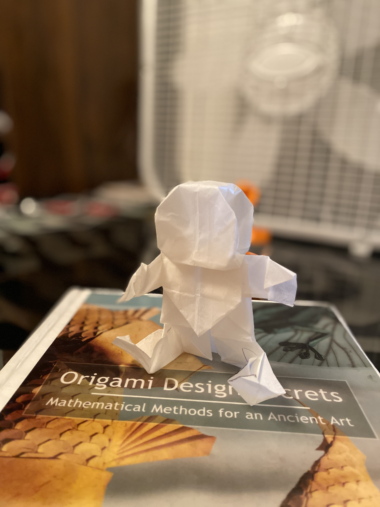
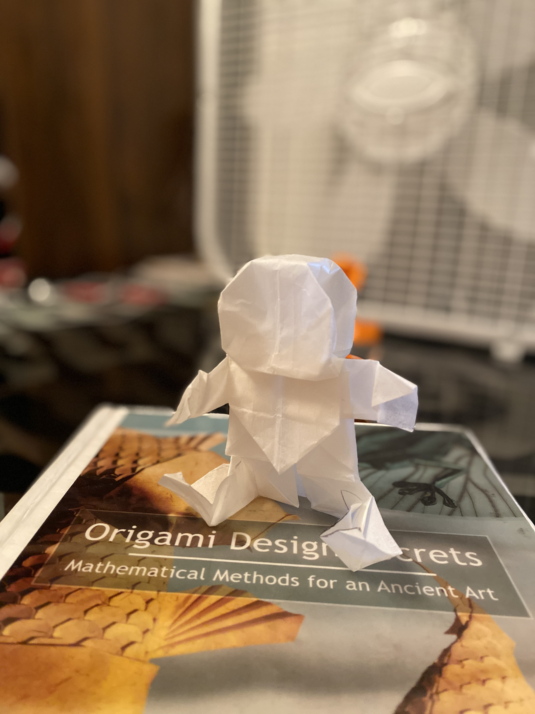

Voici une comparaison entre le kami et le papier parchemin à l'aide du model Baby de Robert J. Lang. Au sujet de la durabilité, le papier parchemin a résisté davantage aux plis ( le kami s’est troué sur la tête du modèle). Le papier parchemin est plus fin, car le modèle est plus compact. Pourtant, ce critère n’est pas vraiment important selon moi pour les débutants, car ce sont les modèles complexes qui font usage des papiers fins. Au sujet de l’esthétisme, le kami est évidemment le meilleur choix, il est plus propre, car il ne montre moins pas de plis contrairement au papier parchemin. Avec la page coloriée, il permet de créer un changement de couleur dans un modèle. Le papier kami est plus accessible, car il est déjà coupé en carré parfait, le reversement de plis (une technique clé pour plier n’importe quel modèle en origami) est plus facile à effectuer, les points de références sont identifiables facilement (il est plus facile d’être précis avec les plis). S’il l’on se fie aux apparences des deux modèles, le modèle en papier parchemin à une tête et un corps plus gros (à cause des imprécisions) et des mains petites, le modèle en kami à un corps symétrique avec des proportions normales. Donc, le kami est un meilleur papier que le papier parchemin pour les débutants en origami.